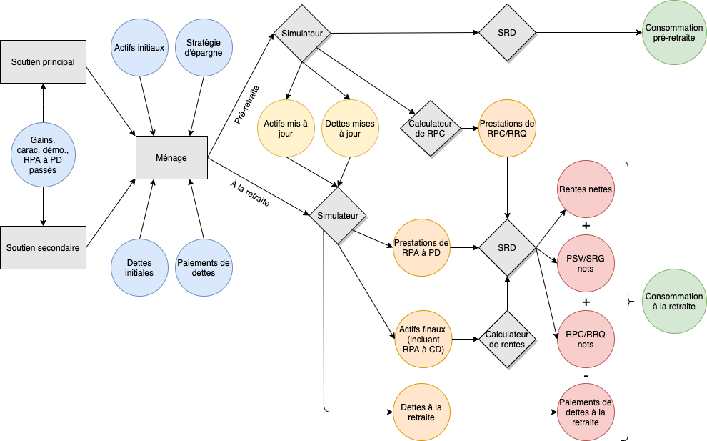

Préparation à la retraite des Canadiens (CPR)¶
The Canadians” Preparation for Retirement (CPR) tool was developed by a team at HEC Montréal’s Retirement and Savings Institute (RSI), with financial support from the National Pension Hub at the Global Risk Institute (GRI). It allows to compute retirement preparation for any household or group of households for which the user has the required input (personal and financial information) at any given point in time. It has been used with 2018 proprietary data to prepare a report published by in June 2020.
As mentioned elsewhere, the CPR is provided « as is » under an MIT licence.
Le CPR simule les années entre l’année de base et la retraite, puis convertit tout le patrimoine financier en rentes actuariellement équitables. Il compare ensuite les situations avant et après la retraite. Comparé aux autres outils disponibles, le CPR offre une flexibilité et une transparence complètes puisque son code est entièrement disponible en ligne sans frais, et qu’il peut être modifié et adapté à volonté. De manière importante et distinctive, le CPR permet également de réaliser des simulations stochastiques, qui permettent à plusieurs dimensions de varier dans le temps selon des hypothèses et des processus de pointe. Tout cela peut être modifié par l’utilisateur sophistiqué, tout comme le nombre de réplications que l’outil utilise pour calculer des résultats moyens et déterminer la (probabilité de) préparation pour la retraite. La version actuelle du CPR utilise 2018 comme année de base; les systèmes fiscaux du Québec et de l’Ontario sont présentement modélisés (on peut approximer les autres provinces en utilisant l’une des ces 2 provinces, de préférence l’Ontario).
Le CPR produit comme extrant un niveau de remplacement de la consommation » pour chaque ménage passant dans le simulateur, et il classe chaque ménage comme étant « préparé » ou « non préparé » pour la retraite sur la base du critère fixé au préalable. Comme dans les rapports produits par d’autres groupes au cours des années 2010, la préparation pour la retraite peut être évaluée en calculant le ratio entre la consommation après la retraite et la consommation avant la retraite et en comparant ce ratio à un seuil, fixé à 65% pour les 4 quintiles de revenu supérieurs et à 80% pour le quintile inférieur. Ces mesures peuvent ensuite être agrégées sur l’ensemble des ménages analysés afin d’obtenir a) la moyenne du taux de remplacement, ou sa distribution; et b) la proportion de ménages qui sont classés « préparés ». Lorsque la version stochastique de l’outil est utilisée, des probabilités d’être préparé peuvent également être calculées et visualisées, pour un ou plusieurs ménage(s). La figure ci-dessous illustre de manière conceptuelle les différentes parties et les flux du CPR.
Le CPR et les autres outils qu’il utilise (le SRD et le SRPP) sont écrits en Python, un langage simple, rapide et moderne. Afin de pouvoir l’utiliser, il faut s’assurer d’avoir au préalable installé une distribution à jour de Python, par exemple à l’aide d’Anaconda. Bien que ce ne soit pas essentiel, il sera également utile de se familiariser un minimum, au préalable, avec les environnements et, si possible, le vocabulaire Python (p.ex. fonction, classe, instance, profil).
